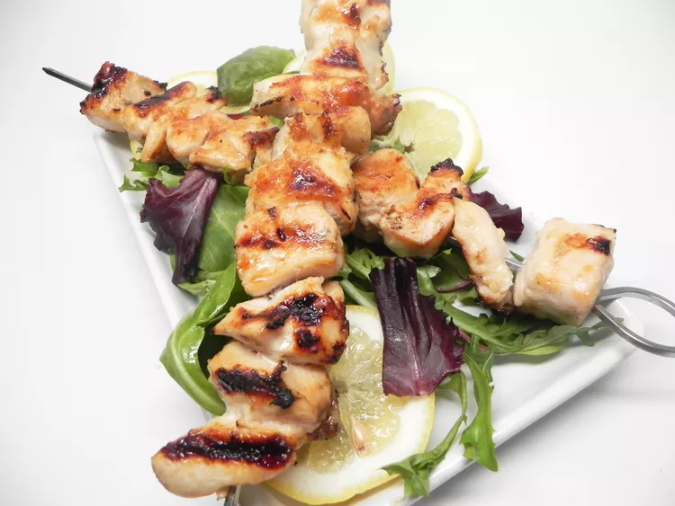

Combine butter, lemon juice, lemon zest, brown sugar, and garlic in a bowl. Add chicken and marinate for at least 1 hour.
Preheat grill for high heat.
Remove chicken from the marinade and shake off excess. Thread onto skewers.
Lightly oil the grill grate. Arrange skewers on the prepared grill. Cook 15 to 20 minutes, turning occasionally, until chicken juices run clear.